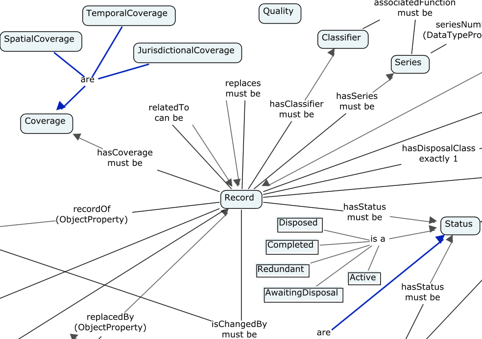

Australian Government Linked Data Working Group
How To
The AGLDWG can assist Australian governments with some Linked Data-related tasks and for those that we can, we publish a series of How To guides here.
The scope of what we can help with is growing but, at the moment, we can guide you through how to:
-
Assign persistent data.gov.au URIs
- To a range of Linked Data things, like whole datasets, elements within datasets & vocabularies etc.
-
Publish Linked Data resources
- Stepping you through publishing ontologies, Vocabularies, Registers of LD objects, Linked Data data (databases/datasets)
-
Host Linked Data resources
- If you have a small (think kilobytes, not megabytes) ontology, vocabulary or register you want to publish through us, we may also be able to help host it
- If you have big things (mega, giga and more), we can suggest server architectures
Publishing Linked Data resources via this group
At the moment, the task that is most requested of the Group is to help organisations publish ontologies. Other publication tasks we can help with are listed in the tabs below.
How to publish an ontology
How we can help
The AGLDWG can arrange namespaces for ontology URIs, help set up and manage those URI redirects and hep with ontology presentation (both technical and aesthetic). We can’t really help develop ontologies as this is often a task that requires a lot of domain knowledge.
Suitability
The AGLDWG is keen to assist government organisations publish Semantic Web/Linked Data ontologies for any purposes they see fit within the realm of government business using the persistent data.gov.au namespace.
Examples
To date we have published some big, and some small, ontologies, such as:
-
The AGRIF Ontology
- an ontology published by the Department of Finance for whole-of-government record keeping
-
The Dataset Ontology
- an ontology published by the AGLDWG itself for describing datasets in catalogues such as data.gov.au using Semantic Web terms
-
The Energy Use Dataset Model (EUDM) ontology
- an draft ontology published by CSIRO for describing specialised energy-related Datasets. A specialised version of the Dataset Ontology

A snippet of the AGRIF ontology with the Record class at the center
Process
We suggest this general process if you wish to publish an ontology to be used for Australian Government data, which means practically publishing it using some part of the data.gov.au domain:
-
Design your ontology
- You will have to design this yourself! We can assist with recommending textbooks, people and tools, just ask
- We recommend using a desktop ontology builder tool to perform your modelling, such as Protégé. It will produce an ontology document in an RDF document
- You will need to use the URI assigned to the ontology (below) for all the elements you define in the ontology
-
Apply for a URI namespaces for your ontology
- Ontologies will likely need several URIs.
- A
/def/URI (like http://reference.data.gov.au/def/ont/agrif) which is the "home" of the ontology; this will usually also be the base URI for the new classes and properties on the ontology -
one or more URIs denoting lists or vocabularies of things required when the ontology is used, but which are maintained on a different schedule
- note that these URIs are different again from the addresses where datasets are published
- A
-
For example:
- The EUDM ontology is defined at http://infrastructure.data.gov.au/def/ont/edum
- The EUDM things - datasets - will be listed at http://infrastructure.data.gov.au/dataset/eudm/ (not yet working), http://transport.data.gov.au/dataset/eudm/ (not yet working) and potentially elsewhere too.
- The AGLDWG will help find appropriate URIs for your ontology and then implement the technical arrangements for them
- Ontologies will likely need several URIs.
-
Present your ontology
- An ontology must, at least, be delivered in an RDF file (in rdf/xml, text/turtle or another RDF format). However it is good practice and a requirement of the AGLDWG to also provide a human-readable version of the ontology to document it (HTML).
- The latter can be generated from ontology files using a range of tools such as LODE.
- The HTML page for the ontology will be provided to a web-browser requesting the ontology's persistent address: e.g. http://reference.data.gov.au/def/ont/dataset
- We suggest including a diagram of the ontology's main classes and relationships.These have to be prepared separately as most tools won't do it automatically. You can use CMap or PowerPoint (which is used for the EUDM ontology).
- See the "make_html.txt" file in the AGRIF ontology's code repository for a full explanation of a process you can emulate
-
Deliver your ontology
- The AGLDWG can host simple ontologies easily for you on our web server, as we host the three examples above
- You may choose to host your ontology elsewhere, in which case you will just need to arrange where the AGLDWG points the assigned URIs too
- The AGLDWG will retain a copy of the ontology, even if you host it elsewhere as a fall-back to ensure all URIs minted can always point somewhere
-
Keep your ontology alive
- We will retain the latest copy of your ontology indefinitely and continue to deliver it online indefinitely
- We really don't want things, once published, to disappear so if you no longer want your ontology to be used any more (perhaps you now recommend or have made a better one), we request you leave it online but mark it deprecated, rather than requesting us to take it down
Publish a Vocabulary
How we can help
The AGLDWG can arrange namespaces for vocabulary URIs. We can assist with URI assignment & redirection for vocabs and the individual terms (Concepts) within them. Depending on the vocab type, we may be able to help with presentation and hosting. We can also assist people with vocab hosting in collaboration with the Australian National Data Service (ANDS).
Suitability
The AGLDWG is keen to assist government organisations publish Semantic Web vocabularies for any purposes they see fit within the realm of government business using the persistent data.gov.au namespace however we acknowledge that ANDS' Research Vocabularies Australia (a vocabulary portal for Australian government and researchers) is likely to cater for many peopl's needs.
Process
-
Determine vocab type
- See the vocab type descriptions below. The type will affect your further steps
-
Choose SKOS or RDFS/OWL
- if you're publishing a classification vocab, we require you to use SKOS. See How To Represent Vocabs below.
- if you're publishing a Register of Linked Data objects, we require you to use RDFS or OWL. See the "Publish a Register" tab on this page.
-
Design your vocab
- You will have to design this yourself! We can assist with recommending textbooks, people and tools, just ask
- If you are not comfortable with directly editing RDF text files, consider applying to use ANDS' vocab editing tools.
- You will need to use the URI assigned to the vocab (below) for the vocab's elements' URIs
-
Apply for a URI
- We will work with you to determine a suitable URI and will set up its functioning for you (redirection to your resources)
- We can provide persistent URIs within data.gov.au for both vocabs as a whole and terms within vocabs.
- Classification vocabs will always have a URI ending in .../def/voc/<VOCAB_ID> which indicates it is a DEFinitional resource of type VOCabulary
- We can provide persistent URIs within data.gov.au Registers of Linked Data objects. Such registers need to have a published ontology definition for the objects within them. again, see the "Publish a Register" tab on this page.
-
Present your vocab
- If not using vocab tools that automatically do so, you will need to make an human-readable version of the vocab in addition to the RDF vocab source. This could be a hand-made or automatically built HTML version of your vocab or a system-generated set of landing pages for items in the vocab, such as the ANDS' RVA provides via SISSVoc
-
Host the vocab
- For classification vocabs, we encourage you to use the RVA portal. If you choose to use some other platform, we can assist with platform suggestions. Note that ANDS help people to use RVA as a back-end with organisation-branded front-ends for vocab display. We do not currently plan to host any classification vocabs ourselves.
- For Registers of Linked Data objects: if it's a small register (KB of text files), we may be able to host it for you but will require you to host the files in a version control system (like GitHub or similar) from which we will pull changes to the hosted location. If it's a big register (MB+, Linked Data APIS, triplestores etc.) then you will need to arrange hosting. We can assist by discussing options. See the Showcase page for examples.
- Both kinds of vocabs will need appropriate metadata. This is approximately AGLS metadata, with a minimal set of elements. We will work with you to implement this.
-
Keep your vocab alive
- Depending on how your vocab is hosted, this may be done automatically.
- We really don't want things, once published, to disappear so if you no longer want your vocab to be used any more (perhaps you now recommend or have made a better one), we request you leave it online but mark it deprecated, rather than taking it down
What is a vocab - different types
Linked Data and the Semantic Web rely on structured, controlled vocabularies of terms for object classification and for presenting lists of objects themselves (registers). For examples of both sorts, see our Showcase page.
How to Represent vocabs
For classification vocabularies, within which we include thesauri, classification schemes, taxonomies, subject-heading systems, code lists & term lists we recommend the use of the SKOS, the Simple Knowledge Organization System.
For registers of objects, we recommend their presentation as lists of instances of OWL class objects.
For both SKOS-based vocabularies and Linked Data Registers, persistent URIs should be used and if the vocabulary or register is an Australian government one, we can make available a data.gov.au-based namespace for it. data.gov.au namespaces can be used with vocabularies delivered by the AGLDWG or others, with arrangement.
Classification vocabularies
The AGLDWG recommends using the Australian National Data Service's SKOS vocabulary editing tool and publishing platform known as Research Vocabularies Australia - RVA, which is free for use by Australian researchers and government entity members. Many members already make use of this service and have published over 100 vocabularies using it. data.gov.au domain-based URIs can work with RVA-delivered vocabularies.

A condensed screenshot of an RVA vocab published by an AGLDWG member - Geoscience Australia's Online Functions Code. The RVA provides display widgets, direct data access and data query services.
RVA has detailed instructions on how to publish a vocabulary: https://vocabs.ands.org.au/vocabs/page/contribute.
Registers of Linked Data objects
Sometimes people wish to publish complex Linked Data/Semantic Web objects that do not lend themselves to SKOS representation. Imagine a list of Australian government organisations: this could be a controlled vocabulary, could be hierarchical but will likely contain far more information per organisation that SKOS allows for.
In these circumstances, we recommend publishing a Register. See the "Publish a Register" tab on this page.
Publish a Register
How we can help
The AGLWDG can assist with allocating data.gov.au URIs to registers and the individual items with registers and with URI redirection setup. We can also assist the functioning of registers by checking that they respond to expected Linked Data/Semantic Web requests, like for HTML and machine-readable versions, and with basic government data publication requirements.
Depending on the size and nature of the register, we can also assist with hosting: we could, for instance, host a small, static, text file-based register (perhaps you’re listing all instances of airports in Australia, a list at most in the thousands) but we could not host a large, database-generated register (perhaps all the geo coded addresses in Australia which contains more than 13M entries).
Suitability
The AGLDWG is keen to assist government organisations publish Semantic Web/Linked Data registers of class instances for any purposes they see fit within the realm of government business using the persistent data.gov.au namespace.
Examples
To date we have only just started assisting organisations with publishing registers. Some examples of small and large sorts are:
-
Disposal Class register
- A register of OWL instances of Disposal Class objects with the class definition coming from the Department of Finance’s AGRIF ontology.
- This is a very small register (a few text files – see the repo here [ref]) that is hosted on the AGLDWG’s webserver
-
G-NAF Address register
- A register of Address instances, as defined by the G-NAF ontology.
- This is a very large register (13M+ instances) delivered by a custom Linked Data API hosted outside the AGLDWG’s systems
- The register URI is redirected to the maintainer, PSMA’s, system
Process
-
Define the items in your register
- We need class (RDFS or OWL) definitions for all the items in the register you wish to publish so we can ensure the URIs for them are appropriate
- This means you will need to either publish an ontology defining their type or type them according to an already published ontology
- In addition to their specific type, all the items in your Register must be defined as being of type reg:RegisterItem, which means items within a reg:Register.
-
Populate your register
- With all the thing you want in it!
- You can statically define items within an RDF text file or you can auto-generate them using an one of a number of Linked Data API tools from an RDF or non-RDF database
-
Apply for a URI
- We can provide persistent URIs within data.gov.au for both the register itself and the items within it
- The register will have a URI based on the class of its items or dataset it is in,or both.
- URIs for Registers end in a slash ('/')
- Items within the Registers have their IDs added after the Register's slash.
- Linked Data conventions means things in the real world will have an /id/ path segment in their URIs
http://environment.data.gov.au/koala/<A_KOALA>with each koala (Caramelo & Blinky Billy) beinghttp://environment.data.gov.au/koala/Caramelo&http://environment.data.gov.au/koala/BlinkyBilly
-
Host your register
- If it's a small (KBytes) RDF text file, host it online using a version control system and work with us so we can pull a copy of it onto our hosting server
- If its big or small but delivered by a Linked Data API, you'll need to let us know where to point the Register and RegisterItem URIs to. Linkely we will just need to create a single redirect pattern for this in our Persistent ID Service.
Publish Linked Data data
Here by "Linked Data data", we mean datasets containing Linked Data other than definitional ontologies & vocabularies and simple registers of Linked Data objects. Think: a database of multiple classes of thing you want exposed as LD or a dataset containing 'features' or other sub-dataset items, all of which you want exposed as LD.How we can help
The AGLWDG can assist with allocating data.gov.au URIs to whole datasets (databases or static file datasets), items within datasets and definitional resources for dataset.
If your dataset is small (KB or perhaps MBs), we may be able to host it for you too. We can host small static datasets on our webserver and triplestore-based data within triplestores that we manage. Please just ask!
Suitability
The AGLDWG is particularly keen to assist government organisations publish Linked Data data. We recognise that there are more definitional resources published for the Semantic Web than data resources so we are very keep to assist people in publishing Linked Data data.
Examples
Coming!